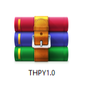
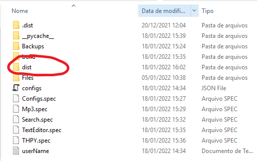
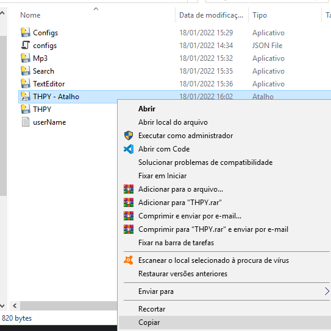
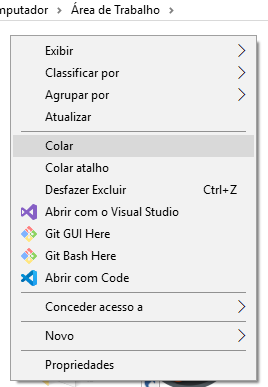

X
THPY é uma aplicação desenvolvida para ser um grande aliado dos usuarios de computadores antigos, porém ainda por ser uma grande ferramenta para quem utiliza computadores potentes e busca um app de fácil utilização e grandes funcionalidades.
Como desenvolvedor acredito que grandes projetos devem começar do zero antes de mudar o mundo e que o mais importante é que estes projetos possam ser utilizados por todos com uma boa qualidade, e foi deste pensamento que nasceu o THPY, um projeto open-source que com a ajuda da comunidade dev de todas as partes do mundo irá mudar sua experiencia com o seu computador
A baixo você pode conferir algumas das funcionalidades da aplicação
Quer saber mais? acesse o link a baixo.
Saiba maisX
A versão atual é a 1.0, em breve teremos novas atualizações e novidades
Me siga nas redes sociais para novas informações.
X
Email: isaacreisbr23@gmail.com
Instagram: @isc.reis.av
Telefone: +55 31 99578-7684
X
Primeiro extraia o arquivo THPY.rar da pasta onde você realizou o download, após extrair o arquivo uma pasta chamada "THPY" será criada você deve acessa-la, após acessar a pasta criada você encontrará dela mais algumas pastas, localize a pasta "dist" e acesse-a
Após acessar a pasta "dist" você encontrará uma lista de arquivos executáveis, encontre um arquivo chamado "THPY-Atalho" e mova-o para a sua Area de trabalho.
Siga estes passos corretamente e você poderá utilizar sem problemas o app
1-Extraia o arquivo
2-Acesse a pasta THPY e acesse a pasta "dist"
3-Localize o arquivo THPY-Atalho dentro da pasta dist e copie-o para sua area de trabalho
4-Vá até a sua area de trabalho e precione colar
Download
Instalação
Features:
Download
Conheça
Atualizações
Reportar Problemas
Ajuda